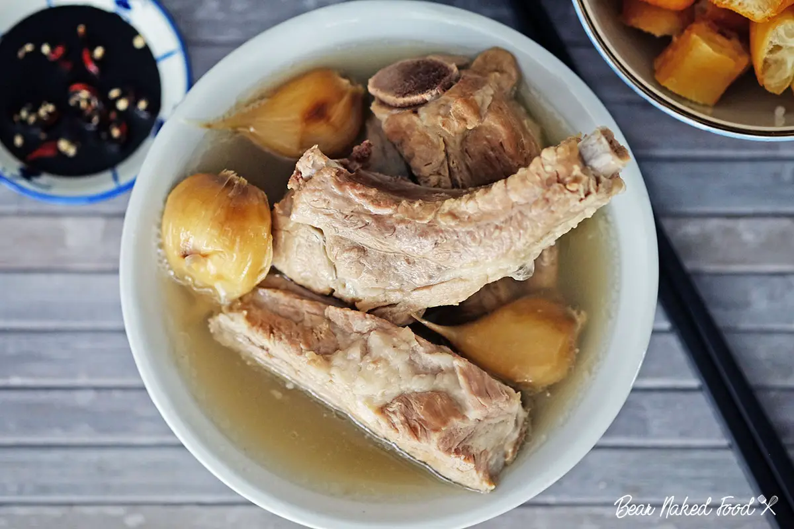

Home
Bak Kut Teh

Image courtesy of
Bear
Naked Food
.
Description
Bak kut teh is a pork rib dish cooked in peppery broth popular in Malaysia,
Singapore and Hokkien and Teochew speaking areas of China.
The name directly translates to "meat bone tea", and primarily consists of pork
ribs simmered in a broth of herbs and spices (including star anise, cinnamon, cloves,
dong quai, fennel seeds and garlic) for hours.
Ingredients (1-2 Pax)
Ingredients and Steps courtesy of
Song Fa.
- 1 Pack of Song Fa Soup Spices
- 12 Cloves of Garlic
- 1/2 Teaspoon Dark Soy Sauce
- 1/2 Teaspoon Light Soy Sauce
- 450-gram blanched pork ribs
- 1200ml water
Steps
- Boil 1200ml of water with 12 pieces of garlic and 2 sachets of spices for 15 minutes
- Add 450 gram of pork ribs.
- Add 1/2 teaspoon of dark soya sauce and 1/2 teaspoon of light soya sauce.
- Simmer on medium heat for 50 minutes.
- Remove sachets after simmering for 50 minutes or any time after to suit individual preference on spiciness.